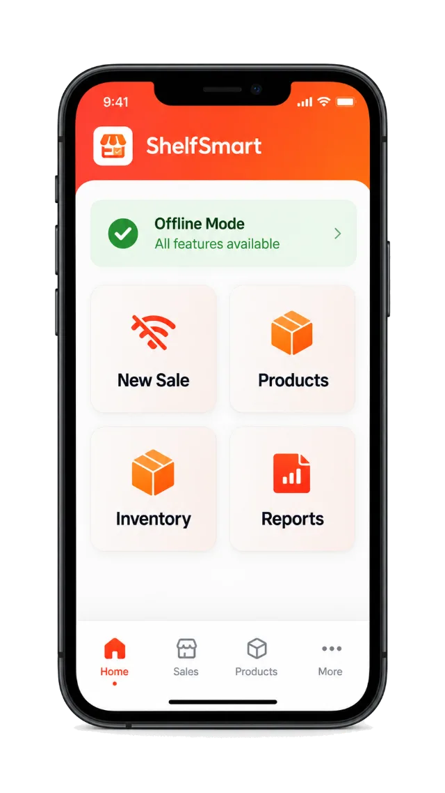
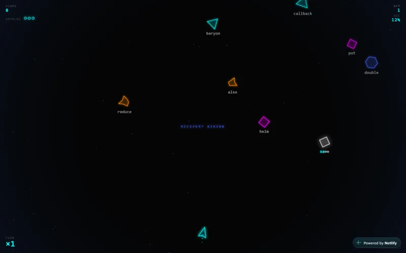
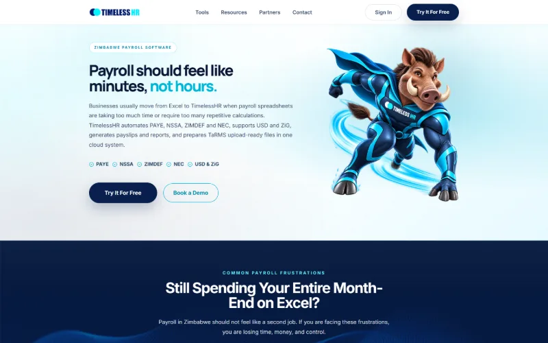

AutoSales
I was the second lead on the backend of Afriform?s vehicle marketplace, contributing to its APIs and delivery.
A till that keeps working offline, a timetable students can carry on their phones, and the software I build with clients and collaborators.
A mobile point of sale and inventory app for small shops. Staff can record sales and track stock without an internet connection. The app syncs when the connection returns.
I designed and built the app, the product site and the direct Android download.
FlutterOffline-first storageREST sync


I founded aiDo to build automation for African businesses. The work starts with everyday tasks such as answering enquiries, handling bookings and following up on orders.
I lead development on GuestAI, a WhatsApp assistant for hospitality teams. It handles guest enquiries, availability and reservation workflows, with a route to staff when they need to step in.
AstroTypeScriptn8n automation

Paste a published university timetable, check the weekly schedule on your phone, and add it to the calendar you already use. I worked on the product that takes students from the published timetable to a usable schedule.
ReactTypeScriptSupabaseCalendar feeds

I built a typing game where each correctly typed letter fires a shot at an approaching word. Difficulty adjusts as you play, and the game tracks the letters you miss.
Play in your browser with a physical keyboard.
CanvasWeb AudioLocal stats

Work I contributed as an associate developer at Afriform Software.
I contributed to backend and product work for this Zimbabwean payroll and HR platform. My work covered multi-tenant administration for adverts, programmes and business content, plus infrastructure for search indexing.

I was the second lead on the backend of Afriform?s vehicle marketplace, contributing to its APIs and delivery.
A student opportunity platform connecting verified scholarships, practical guidance and repeat-use tools.
Visit Scholarz GateAn offline-first coding assistant that reviews code and teaches without a connection.
View on GitHubA DM-native layer turning customer conversations into orders, quotes and accountable handoffs. In development.
Explore the ecosystem